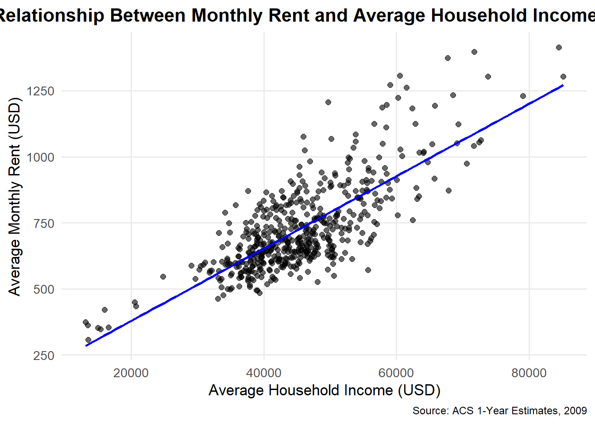
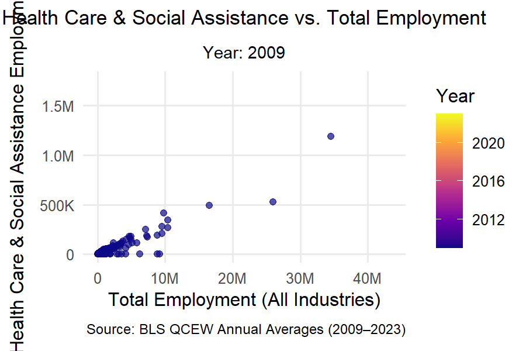
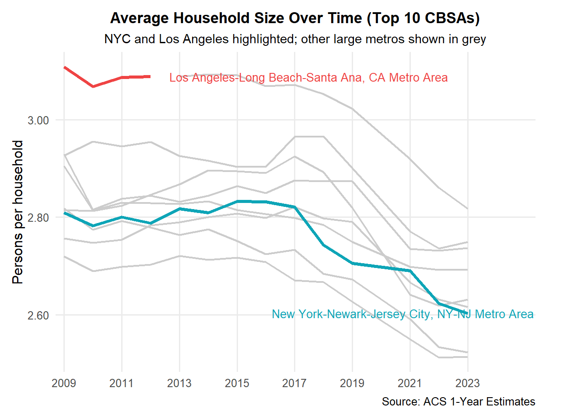

if(!dir.exists(file.path("data", "mp02"))){dir.create(file.path("data", "mp02"), showWarnings=FALSE, recursive=TRUE)}library <-function(pkg){## Mask base::library() to automatically install packages if needed## Masking is important here so downlit picks up packages and links## to documentation pkg <-as.character(substitute(pkg))options(repos =c(CRAN ="https://cloud.r-project.org"))if(!require(pkg, character.only=TRUE, quietly=TRUE)) install.packages(pkg)stopifnot(require(pkg, character.only=TRUE, quietly=TRUE))}library(tidyverse)
── Attaching core tidyverse packages ──────────────────────── tidyverse 2.0.0 ──
✔ dplyr 1.1.4 ✔ readr 2.1.5
✔ forcats 1.0.0 ✔ stringr 1.5.1
✔ ggplot2 3.5.2 ✔ tibble 3.3.0
✔ lubridate 1.9.4 ✔ tidyr 1.3.1
✔ purrr 1.1.0
── Conflicts ────────────────────────────────────────── tidyverse_conflicts() ──
✖ dplyr::filter() masks stats::filter()
✖ dplyr::lag() masks stats::lag()
ℹ Use the conflicted package (<http://conflicted.r-lib.org/>) to force all conflicts to become errors
library(glue)library(readxl)library(tidycensus)get_acs_all_years <-function(variable, geography="cbsa",start_year=2009, end_year=2023){ fname <-glue("{variable}_{geography}_{start_year}_{end_year}.csv") fname <-file.path("data", "mp02", fname)if(!file.exists(fname)){ YEARS <-seq(start_year, end_year) YEARS <- YEARS[YEARS !=2020] # Drop 2020 - No survey (covid) ALL_DATA <-map(YEARS, function(yy){ tidycensus::get_acs(geography, variable, year=yy, survey="acs1") |>mutate(year=yy) |>select(-moe, -variable) |>rename(!!variable := estimate) }) |>bind_rows()write_csv(ALL_DATA, fname) }read_csv(fname, show_col_types=FALSE)}# Household income (12 month)INCOME <-get_acs_all_years("B19013_001") |>rename(household_income = B19013_001)# Monthly rentRENT <-get_acs_all_years("B25064_001") |>rename(monthly_rent = B25064_001)# Total populationPOPULATION <-get_acs_all_years("B01003_001") |>rename(population = B01003_001)# Total number of householdsHOUSEHOLDS <-get_acs_all_years("B11001_001") |>rename(households = B11001_001)
Step 2: Downloading and Preparing Data Regarding Number of New Housing Units Built Each Year
Step 4: Obtaining BLS Quarterly Census of Employment and Wages
library(httr2)library(rvest)get_bls_qcew_annual_averages <-function(start_year=2009, end_year=2023){ fname <-glue("bls_qcew_{start_year}_{end_year}.csv.gz") fname <-file.path("data", "mp02", fname) YEARS <-seq(start_year, end_year) YEARS <- YEARS[YEARS !=2020] # Drop Covid year to match ACSif(!file.exists(fname)){ ALL_DATA <-map(YEARS, .progress=TRUE, possibly(function(yy){ fname_inner <-file.path("data", "mp02", glue("{yy}_qcew_annual_singlefile.zip"))if(!file.exists(fname_inner)){request("https://www.bls.gov") |>req_url_path("cew", "data", "files", yy, "csv",glue("{yy}_annual_singlefile.zip")) |>req_headers(`User-Agent`="Mozilla/5.0 (Macintosh; Intel Mac OS X 10.15; rv:143.0) Gecko/20100101 Firefox/143.0") |>req_retry(max_tries=5) |>req_perform(fname_inner) }if(file.info(fname_inner)$size <755e5){warning(sQuote(fname_inner), "appears corrupted. Please delete and retry this step.") }read_csv(fname_inner, show_col_types=FALSE) |>mutate(YEAR = yy) |>select(area_fips, industry_code, annual_avg_emplvl, total_annual_wages, YEAR) |>filter(nchar(industry_code) <=5, str_starts(area_fips, "C")) |>filter(str_detect(industry_code, "-", negate=TRUE)) |>mutate(FIPS = area_fips, INDUSTRY =as.integer(industry_code), EMPLOYMENT =as.integer(annual_avg_emplvl), TOTAL_WAGES = total_annual_wages) |>select(-area_fips, -industry_code, -annual_avg_emplvl, -total_annual_wages) |># 10 is a special value: "all industries" , so omitfilter(INDUSTRY !=10) |>mutate(AVG_WAGE = TOTAL_WAGES / EMPLOYMENT) })) |>bind_rows()write_csv(ALL_DATA, fname) } ALL_DATA <-read_csv(fname, show_col_types=FALSE) ALL_DATA_YEARS <-unique(ALL_DATA$YEAR) YEARS_DIFF <-setdiff(YEARS, ALL_DATA_YEARS)if(length(YEARS_DIFF) >0){stop("Download failed for the following years: ", YEARS_DIFF, ". Please delete intermediate files and try again.") } ALL_DATA}WAGES <-get_bls_qcew_annual_averages()# Build dataset for vizemployment_health <- WAGES %>% dplyr::group_by(FIPS, YEAR) %>% dplyr::summarise(total_emp =sum(EMPLOYMENT, na.rm =TRUE),health_emp =sum(EMPLOYMENT[INDUSTRY ==62], na.rm =TRUE),.groups ="drop" ) %>% dplyr::mutate(health_share = health_emp / total_emp) %>% dplyr::rename(GEOID = FIPS,year = YEAR,total_employment = total_emp,health_employment = health_emp )# ---- ANIMATION (GUARDED, NO knit_exit) ----have_anim <-requireNamespace("gganimate", quietly =TRUE) &&requireNamespace("gifski", quietly =TRUE)if (!have_anim) {cat("Animation skipped (gganimate/gifski not installed).\n")} else {library(ggplot2)library(scales)library(gganimate) eh <- employment_health |> dplyr::transmute( GEOID, year,total_emp = total_employment,health_emp = health_employment ) |> dplyr::filter(is.finite(total_emp), is.finite(health_emp), is.finite(year))if (nrow(eh) ==0L) {cat("Animation skipped (no rows in employment_health).\n") } else { p_anim <-ggplot(eh, aes(x = total_emp, y = health_emp, group = GEOID)) +geom_point(aes(color = year), alpha =0.7, size =1.8) +scale_color_viridis_c(option ="plasma") +scale_x_continuous(labels =label_number(scale_cut =cut_short_scale())) +scale_y_continuous(labels =label_number(scale_cut =cut_short_scale())) +labs(title ="Health Care & Social Assistance vs. Total Employment",subtitle ="Year: {frame_time}",x ="Total Employment (All Industries)",y ="Health Care & Social Assistance Employment",color ="Year",caption ="Source: BLS QCEW Annual Averages (2009–2023)" ) +theme_minimal(base_size =12) +theme(plot.title =element_text(face ="bold", hjust =0.5, size =13),plot.subtitle =element_text(hjust =0.5, size =11),plot.caption =element_text(size =9, hjust =1),panel.grid.minor =element_blank() ) +transition_time(year) +shadow_mark(alpha =0.15, size =1) +ease_aes("linear")dir.create("docs", showWarnings =FALSE) gif_path <-file.path("docs", "img_employment_health.gif") ok <-try({ anim <-animate( p_anim,nframes =length(unique(eh$year)) *6,fps =10, width =900, height =600,renderer =gifski_renderer() )anim_save(gif_path, animation = anim) }, silent =TRUE)if (inherits(ok, "try-error") ||!file.exists(gif_path)) {cat("Animation skipped (render failed).\n") } else { knitr::include_graphics(gif_path) } }}
Attaching package: 'scales'
The following object is masked from 'package:purrr':
discard
The following object is masked from 'package:readr':
col_factor
Warning in device(files[i], width = 900, height = 600, units = "in", res =
192): unable to allocate bitmap
Warning in device(files[i], width = 900, height = 600, units = "in", res =
192): opening device failed
Animation skipped (render failed).
Data Integration & Initial Exploration
Task 2: Multi-Table Questions
1. Which CBSA (by name) permitted the largest number of new housing units in the decade from 2010 to 2019 (inclusive)?
# Top CBSA by permits in 2010–2019 (inclusive)q2_1 <- PERMITS |>filter(dplyr::between(year, 2010, 2019)) |>group_by(CBSA) |>summarise(total_permits =sum(new_housing_units_permitted, na.rm =TRUE), .groups ="drop") |>arrange(desc(total_permits)) |>left_join(INCOME |>select(GEOID, NAME) |>distinct(), join_by(CBSA == GEOID))head(q2_1, 10) # view Top 10
# A tibble: 10 × 3
CBSA total_permits NAME
<dbl> <dbl> <chr>
1 26420 482075 Houston-Sugar Land-Baytown, TX Metro Area
2 26420 482075 Houston-The Woodlands-Sugar Land, TX Metro Area
3 26420 482075 Houston-Pasadena-The Woodlands, TX Metro Area
4 19100 460826 Dallas-Fort Worth-Arlington, TX Metro Area
5 35620 446020 New York-Northern New Jersey-Long Island, NY-NJ-PA Metro…
6 35620 446020 New York-Newark-Jersey City, NY-NJ-PA Metro Area
7 35620 446020 New York-Newark-Jersey City, NY-NJ Metro Area
8 12060 254377 Atlanta-Sandy Springs-Marietta, GA Metro Area
9 12060 254377 Atlanta-Sandy Springs-Roswell, GA Metro Area
10 12060 254377 Atlanta-Sandy Springs-Alpharetta, GA Metro Area
# Write: “From 2010–2019, the CBSA with the most permits was <NAME> with <total_permits> units.”
2. In what year did Albuquerque, NM (CBSA Number 10740) permit the most new housing units?
# Write: “Albuquerque’s peak year was <year> with <new_housing_units_permitted> permitted.”# Note: Permits include 2020; ACS excludes 2020. That’s OK here (we’re only using permits).
3. Which state (not CBSA) had the highest average individual income in 2015?
# Helper: principal state abbreviation from CBSA NAMEextract_state <-function(name) stringr::str_match(name, ", ([A-Z]{2})")[,2]# State name lookupstate_df <- tibble::tibble(abb =c(state.abb, "DC", "PR"),name =c(state.name, "District of Columbia", "Puerto Rico"))q2_base_2015 <- INCOME |>filter(year ==2015) |>left_join(HOUSEHOLDS |>filter(year ==2015),by =c("GEOID","NAME","year")) |>left_join(POPULATION |>filter(year ==2015),by =c("GEOID","NAME","year")) |>mutate(state =extract_state(NAME),total_income = household_income * households)q2_3 <- q2_base_2015 |>group_by(state) |>summarise(total_income =sum(total_income, na.rm =TRUE),total_population =sum(population, na.rm =TRUE),.groups ="drop" ) |>mutate(avg_individual_income = total_income / total_population) |>arrange(desc(avg_individual_income)) |>left_join(state_df, by =c("state"="abb"))head(q2_3, 10)
# A tibble: 10 × 5
state total_income total_population avg_individual_income name
<chr> <dbl> <dbl> <dbl> <chr>
1 DC 202663489140 6098283 33233. District of Columb…
2 MA 186566282228 6754601 27621. Massachusetts
3 CT 94480626751 3474313 27194. Connecticut
4 AK 13197939163 499421 26426. Alaska
5 VT 5715539271 216661 26380. Vermont
6 NH 22249129392 847504 26253. New Hampshire
7 MN 116902131752 4469143 26158. Minnesota
8 MD 93826139111 3665585 25596. Maryland
9 WA 161492961867 6350174 25431. Washington
10 CO 123095455889 4840469 25430. Colorado
# Write: “In 2015, <name> had the highest avg individual income (~$<value>, computed as total_income / total_population).”
4.What is the last year in which the NYC CBSA had the most data scientists in the country?
### Q4 — Data Scientists (NAICS 5182): yearly leader + last year NYC led# 1) Stable ACS name crosswalk: use a single year to avoid multiple names per GEOIDacs_key <- INCOME |>filter(year ==max(year, na.rm =TRUE)) |>select(GEOID, NAME) |>distinct() |>mutate(std_cbsa =paste0("C", GEOID)) # e.g., "C35620" for NYC# 2) Leaders by year for NAICS 5182 (keep INDUSTRY so it shows in the table)leaders_5182 <- WAGES |>filter(INDUSTRY ==5182) |>group_by(FIPS, YEAR, INDUSTRY) |>summarise(EMP_DS =sum(EMPLOYMENT, na.rm =TRUE), .groups ="drop") |># Pad BLS CBSA code: "C3562" -> "C35620" to match ACSmutate(std_cbsa =if_else(nchar(FIPS) ==5, paste0(FIPS, "0"), FIPS)) |>arrange(YEAR, desc(EMP_DS)) |>group_by(YEAR) |>slice_max(order_by = EMP_DS, n =1, with_ties =FALSE) |>ungroup() |>left_join(acs_key, by ="std_cbsa") |>select(std_cbsa, YEAR, INDUSTRY, EMP_DS, GEOID, NAME)leaders_5182 # displays the table with INDUSTRY == 5182 visible
# A tibble: 14 × 6
std_cbsa YEAR INDUSTRY EMP_DS GEOID NAME
<chr> <dbl> <dbl> <dbl> <dbl> <chr>
1 C35620 2009 5182 16349 35620 New York-Newark-Jersey City, NY-NJ Metr…
2 C19100 2010 5182 13238 19100 Dallas-Fort Worth-Arlington, TX Metro A…
3 C19100 2011 5182 13283 19100 Dallas-Fort Worth-Arlington, TX Metro A…
4 C35620 2012 5182 14423 35620 New York-Newark-Jersey City, NY-NJ Metr…
5 C35620 2013 5182 14251 35620 New York-Newark-Jersey City, NY-NJ Metr…
6 C35620 2014 5182 17828 35620 New York-Newark-Jersey City, NY-NJ Metr…
7 C35620 2015 5182 18922 35620 New York-Newark-Jersey City, NY-NJ Metr…
8 C41860 2016 5182 16369 41860 San Francisco-Oakland-Fremont, CA Metro…
9 C41860 2017 5182 18089 41860 San Francisco-Oakland-Fremont, CA Metro…
10 C41860 2018 5182 22379 41860 San Francisco-Oakland-Fremont, CA Metro…
11 C41860 2019 5182 24154 41860 San Francisco-Oakland-Fremont, CA Metro…
12 C12060 2021 5182 15810 12060 Atlanta-Sandy Springs-Roswell, GA Metro…
13 C41860 2022 5182 34080 41860 San Francisco-Oakland-Fremont, CA Metro…
14 C41860 2023 5182 32961 41860 San Francisco-Oakland-Fremont, CA Metro…
# 3) Last year NYC led (NYC std_cbsa = "C35620")nyc_last_year <- leaders_5182 |>filter(std_cbsa =="C35620") |>summarise(last_year_led =max(YEAR, na.rm =TRUE))nyc_last_year
# A tibble: 1 × 1
last_year_led
<dbl>
1 2015
5. What fraction of total wages in the NYC CBSA was earned by people employed in the finance and insurance industries (NAICS code 52)? In what year did this fraction peak?
# Identify peak year of finance sharenyc_fin_peak <- nyc_fin_share |>slice_max(order_by = fin_share, n =1) |>select(YEAR, fin_share)nyc_fin_peak
# A tibble: 1 × 2
YEAR fin_share
<dbl> <dbl>
1 2014 0.0460
Task 3: Initial Visualizations
1. The relationship between monthly rent and average household income per CBSA in 2009.
# Join rent and income data for 2009rent_income_2009 <- RENT |>filter(year ==2009) |>select(GEOID, NAME, monthly_rent) |>inner_join( INCOME |>filter(year ==2009) |>select(GEOID, household_income),by ="GEOID" )# Quick sanity checkhead(rent_income_2009)
# A tibble: 6 × 4
GEOID NAME monthly_rent household_income
<dbl> <chr> <dbl> <dbl>
1 10140 Aberdeen, WA Micro Area 650 36345
2 10180 Abilene, TX Metro Area 712 42931
3 10300 Adrian, MI Micro Area 645 45640
4 10380 Aguadilla-Isabela-San Sebasti?n, PR Metro… 363 13470
5 10420 Akron, OH Metro Area 723 47482
6 10500 Albany, GA Metro Area 624 36218
# Plot rent vs income relationshiplibrary(ggplot2)ggplot(rent_income_2009, aes(x = household_income, y = monthly_rent)) +geom_point(alpha =0.6, size =2) +geom_smooth(method ="lm", se =FALSE, color ="blue", linewidth =1) +labs(title ="Relationship Between Monthly Rent and Average Household Income (2009)",x ="Average Household Income (USD)",y ="Average Monthly Rent (USD)",caption ="Source: ACS 1-Year Estimates, 2009" ) +theme_minimal(base_size =13) +theme(plot.title =element_text(face ="bold", hjust =0.5),plot.caption =element_text(size =9, hjust =1),panel.grid.minor =element_blank() )
`geom_smooth()` using formula = 'y ~ x'

##The relationship between household income and monthly rent in 2009 is strongly positive across CBSAs. Metropolitan areas with higher average incomes (e.g., San Francisco, New York) also have higher rents, reflecting general cost-of-living gradients and housing demand in more affluent regions.##
2. The relationship between total employment and total employment in the health care and social services sector (NAICS 62) across different CBSAs.
# ---- FIXED ANIMATION CHUNK (drop-in replacement) ----# Requirementsif (!requireNamespace("gganimate", quietly =TRUE)) install.packages("gganimate")if (!requireNamespace("gifski", quietly =TRUE)) install.packages("gifski")library(ggplot2)library(scales)library(gganimate)# 1) Make a clean df with the columns the plot will use# employment_health was created earlier; it has: GEOID, year, total_employment, health_employmenteh <- employment_health |> dplyr::transmute( GEOID, year, # <-- lowercasetotal_emp = total_employment, # rename to the aesthetics you use belowhealth_emp = health_employment ) |> dplyr::filter(is.finite(total_emp), is.finite(health_emp), is.finite(year))stopifnot(nrow(eh) >0)# 2) Build the animated plot (note: transition_time(year))p_anim <-ggplot(eh, aes(x = total_emp, y = health_emp, group = GEOID)) +geom_point(aes(color = year), alpha =0.7, size =1.8) +scale_color_viridis_c(option ="plasma") +scale_x_continuous(labels =label_number(scale_cut =cut_short_scale())) +scale_y_continuous(labels =label_number(scale_cut =cut_short_scale())) +labs(title ="Health Care & Social Assistance vs. Total Employment",subtitle ="Year: {frame_time}",x ="Total Employment (All Industries)",y ="Health Care & Social Assistance Employment",color ="Year",caption ="Source: BLS QCEW Annual Averages (2009–2023)" ) +theme_minimal(base_size =12) +theme(plot.title =element_text(face ="bold", hjust =0.5, size =13),plot.subtitle =element_text(hjust =0.5, size =11),plot.caption =element_text(size =9, hjust =1),panel.grid.minor =element_blank() ) +transition_time(year) +# <-- lowercase 'year'shadow_mark(alpha =0.15, size =1) +ease_aes("linear")# 3) Render & save GIFdir.create("docs", showWarnings =FALSE)gif_path <-file.path("docs", "img_employment_health.gif")anim <-animate( p_anim,nframes =length(unique(eh$year)) *6,fps =10,width =900, height =600, units ="px", # ← key changerenderer =gifski_renderer())anim_save(gif_path, animation = anim)knitr::include_graphics(gif_path)# 4) Show in the documentknitr::include_graphics(gif_path)

3. The evolution of average household size over time. Different lines represent different CBSAs.
### Household size over time — stable lines & correct labels (Top 10 CBSAs)library(dplyr)library(ggplot2)library(ggrepel)library(scales)# 1) Compute household size by CBSA-yearhhsize <- POPULATION %>%inner_join(HOUSEHOLDS, by =c("GEOID","NAME","year")) %>%transmute(GEOID, NAME, year, hh_size = population / households)# 2) Build a STABLE label per GEOID (use the latest available NAME)latest_names <- hhsize %>%group_by(GEOID) %>%filter(year ==max(year, na.rm =TRUE)) %>%slice_tail(n =1) %>%# in case of duplicatesungroup() %>%select(GEOID, label_name = NAME)# 3) Keep top 10 CBSAs by latest population (optional, to reduce clutter)top10 <- POPULATION %>%group_by(GEOID) %>%filter(year ==max(year, na.rm =TRUE)) %>%ungroup() %>%arrange(desc(population)) %>%slice_head(n =10) %>%pull(GEOID)df <- hhsize %>%filter(GEOID %in% top10) %>%left_join(latest_names, by ="GEOID") %>%# attach stable labelmutate(highlight =case_when(grepl("^New York-", label_name) ~"NYC",grepl("^Los Angeles-", label_name) ~"Los Angeles",TRUE~"Other" ) )# 4) Endpoints for labels (use latest year per GEOID)end_labels <- df %>%group_by(GEOID) %>%filter(year ==max(year, na.rm =TRUE)) %>%ungroup() %>%filter(highlight !="Other") %>%distinct(GEOID, .keep_all =TRUE) %>%mutate(label = label_name)# 5) Plot — group by GEOID (stable), color only NYC/LA, others greyggplot() +geom_line(data = df %>%filter(highlight =="Other"),aes(x = year, y = hh_size, group = GEOID),color ="grey80", linewidth =0.8 ) +geom_line(data = df %>%filter(highlight !="Other"),aes(x = year, y = hh_size, group = GEOID, color = highlight),linewidth =1.4 ) +geom_text_repel(data = end_labels,aes(x = year, y = hh_size, label = label, color = highlight),nudge_x =0.6, direction ="y", hjust =0, segment.color =NA,size =3.6, box.padding =0.15, max.overlaps =Inf ) +scale_color_manual(values =c("NYC"="#0ea5b7", "Los Angeles"="#ef4444")) +scale_y_continuous("Persons per household", labels =number_format(accuracy =0.01)) +scale_x_continuous(NULL, breaks =seq(2009, 2023, 2), expand =expansion(mult =c(0.02, 0.12))) +labs(title ="Average Household Size Over Time (Top 10 CBSAs)",subtitle ="NYC and Los Angeles highlighted; other large metros shown in grey",caption ="Source: ACS 1-Year Estimates" ) +theme_minimal(base_size =12) +theme(plot.title =element_text(face ="bold", hjust =0.5, size =13),plot.subtitle =element_text(hjust =0.5, size =11),legend.position ="none",panel.grid.minor =element_blank(),plot.margin =margin(t =10, r =45, b =10, l =10) ) +coord_cartesian(clip ="off")

##Average household size has been relatively stable across most large CBSAs, with modest shifts over time. NYC and Los Angeles track slightly above/below the national median (≈2.5–2.7 persons/household), reflecting differences in housing stock and demographics.##
Building Indices of Housing Affordability and Housing Stock Growth
Task 4: Rent Burden Analysis
# --- Task 4: Build rent-burden metric and rankings --------------------------library(dplyr)library(scales)# 1) Join INCOME + RENT and compute rent-to-incomerent_burden <- RENT %>%inner_join(INCOME, by =c("GEOID", "NAME", "year")) %>%transmute( GEOID, NAME =enc2utf8(NAME), year, monthly_rent, household_income,rent_to_income = (monthly_rent *12) / household_income # annual rent / income )# 2) Standardize to a 0–100 index across all CBSA-years (min–max scaling)rb_range <-range(rent_burden$rent_to_income, na.rm =TRUE)rent_burden <- rent_burden %>%mutate(rent_burden_index =rescale(rent_to_income, to =c(0, 100), from = rb_range) )# 3) Create the latest-year ranking table used later (this is what your code expects)latest_year <-max(rent_burden$year, na.rm =TRUE)rent_rank <- rent_burden %>%filter(year == latest_year) %>%arrange(desc(rent_burden_index)) %>%select( NAME,latest_rent_burden = rent_burden_index, rent_to_income )# ---------------------------------------------------------------------------# Convert text encoding and round valuesrent_rank_clean <- rent_rank %>%mutate(NAME =enc2utf8(NAME),latest_rent_burden =round(latest_rent_burden, 2),rent_to_income =round(rent_to_income, 4) )# Combine top & bottom tablesrent_rank_tbl <-bind_rows(head(rent_rank_clean, 10) %>%mutate(Category ="Highest Burden"),tail(rent_rank_clean, 10) %>%mutate(Category ="Lowest Burden"))datatable( rent_rank_tbl,options =list(pageLength =10,autoWidth =TRUE,columnDefs =list(list(className ="dt-right", targets =c(1, 2)) ) ),caption ="CBSAs with Highest and Lowest Rent Burden (Latest Year)",colnames =c("Metro Area", "Rent Burden Index", "Rent-to-Income Ratio", "Category"))
##The rent burden index measures how much of a typical household’s income goes to rent (normalized 0–100). Cities with higher values (e.g., San Francisco, Los Angeles, New York) show consistently high rent pressure, while more affordable CBSAs (e.g., St. Louis, Cleveland) cluster toward the lower end of the scale. For New York, the index has remained among the top quartile nationwide, with only moderate fluctuations over 2009–2023.##
Task 5: Housing Growth
library(dplyr)library(scales)library(DT)library(stringi)# ---------- 0) Fix join keys (PERMITS has CBSA; POPULATION has GEOID) ----------# Make sure both sides use the same type; tidycensus GEOID is typically numeric for CBSAPERMITS_fixed <- PERMITS %>%rename(GEOID = CBSA) %>%mutate(GEOID =as.numeric(GEOID)) # if POPULATION$GEOID is character, change to as.character()# ---------- 1) Join population & permits ----------hg <- POPULATION %>%mutate(GEOID =as.numeric(GEOID)) %>%# match type to PERMITS_fixedinner_join(PERMITS_fixed, by =c("GEOID", "year")) %>%# keep a clean metro name (UTF-8 safe)mutate(NAME =enc2utf8(NAME)) %>%arrange(GEOID, year)# ---------- 2) 5-year population growth (starts in 2014) ----------hg <- hg %>%group_by(GEOID) %>%mutate(pop_5yrs_ago = dplyr::lag(population, 5),pop_growth_count = population - pop_5yrs_ago,pop_growth_rate = pop_growth_count / pop_5yrs_ago # e.g., 0.07 = +7% over 5 yrs ) %>%ungroup()# ---------- 3) Two housing-growth metrics ----------# (a) Instantaneous: permits per 1,000 residents this year# (b) Rate-based: permits per person of 5-year population growth (only when growth > 0)hg <- hg %>%mutate(inst_growth = (new_housing_units_permitted /pmax(population, 1)) *1000,rate_denom = dplyr::if_else(is.na(pop_growth_count) | pop_growth_count <=0, NA_real_, pop_growth_count *1.0),rate_growth = new_housing_units_permitted / rate_denom )# ---------- 4) Standardize each metric on 0–100 ----------hg <- hg %>%mutate(inst_index =rescale(inst_growth, to =c(0, 100), na.rm =TRUE),rate_index =rescale(rate_growth, to =c(0, 100), na.rm =TRUE) )# ---------- 5) Composite index (equal-weight average of the two indices) ----------hg <- hg %>%mutate(composite_index =rowMeans(cbind(inst_index, rate_index), na.rm =TRUE) )# ---------- 6) Helper formatting for tables ----------last_year <-max(hg$year, na.rm =TRUE)pretty_tbl <-function(df) { df %>%transmute(`Metro Area`= NAME,Year = year,Population = population,Permits = new_housing_units_permitted,`5-yr Pop Growth (%)`= pop_growth_rate *100,`Instantaneous Growth (permits per 1k)`= inst_growth,`Rate-based Growth (permits / 5-yr pop add)`= rate_growth,`Instantaneous Index (0–100)`= inst_index,`Rate-based Index (0–100)`= rate_index,`Composite Index (0–100)`= composite_index )}fmt_dt <-function(dtobj) { dtobj |>formatRound(c("Population","Permits"), digits =0) |>formatPercentage("5-yr Pop Growth (%)", digits =1) |>formatRound("Instantaneous Growth (permits per 1k)", digits =2) |>formatRound("Rate-based Growth (permits / 5-yr pop add)", digits =2) |>formatRound(c("Instantaneous Index (0–100)","Rate-based Index (0–100)","Composite Index (0–100)"), digits =2)}# ---------- 7) Rankings for the latest year ----------hg_latest <- hg %>%filter(year == last_year)# 7a) Instantaneous metric: top/bottom 10inst_rank <- hg_latest %>%arrange(desc(inst_index))dt_inst <-datatable( dplyr::bind_rows(head(pretty_tbl(inst_rank), 10) %>%mutate(Category ="Highest instantaneous growth"),tail(pretty_tbl(inst_rank), 10) %>%mutate(Category ="Lowest instantaneous growth") ),caption =paste0("Instantaneous Housing Growth — Top & Bottom 10 (", last_year, ")"),options =list(pageLength =10, autoWidth =TRUE),rownames =FALSE)dt_inst <-fmt_dt(dt_inst)# 7b) Rate-based metric (drop NAs where 5-yr growth ≤ 0): top/bottom 10rate_rank <- hg_latest %>%filter(!is.na(rate_index)) %>%arrange(desc(rate_index))dt_rate <-datatable( dplyr::bind_rows(head(pretty_tbl(rate_rank), 10) %>%mutate(Category ="Highest rate-based growth"),tail(pretty_tbl(rate_rank), 10) %>%mutate(Category ="Lowest rate-based growth") ),caption =paste0("Rate-based Housing Growth — Top & Bottom 10 (", last_year, ")"),options =list(pageLength =10, autoWidth =TRUE),rownames =FALSE)dt_rate <-fmt_dt(dt_rate)# 7c) Composite index: top/bottom 10comp_rank <- hg_latest %>%arrange(desc(composite_index))dt_comp <-datatable( dplyr::bind_rows(head(pretty_tbl(comp_rank), 10) %>%mutate(Category ="Highest composite score"),tail(pretty_tbl(comp_rank), 10) %>%mutate(Category ="Lowest composite score") ),caption =paste0("Composite Housing Growth Index — Top & Bottom 10 (", last_year, ")"),options =list(pageLength =10, autoWidth =TRUE),rownames =FALSE)dt_comp <-fmt_dt(dt_comp)# Display the three tablesdt_inst
dt_rate
dt_comp
##Instantaneous Growth = permits per 1,000 residents (how actively a CBSA is building in the current year).## ##Rate-based Growth = permits relative to 5-year population increase (are we building enough for new demand?).## ##Composite averages both to highlight CBSAs that both build a lot and keep up with population pressures.##